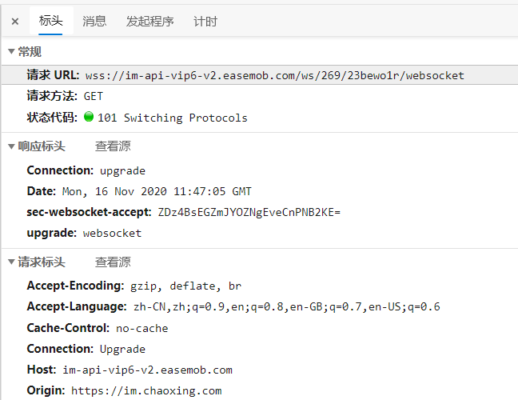
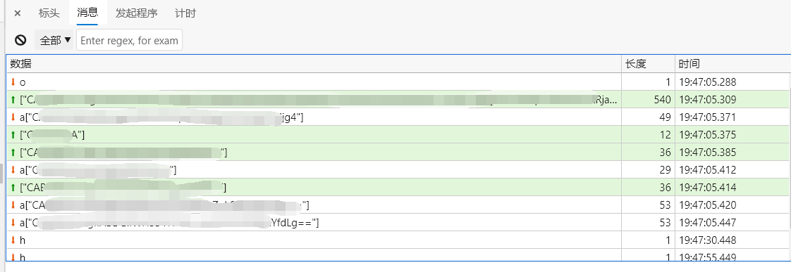
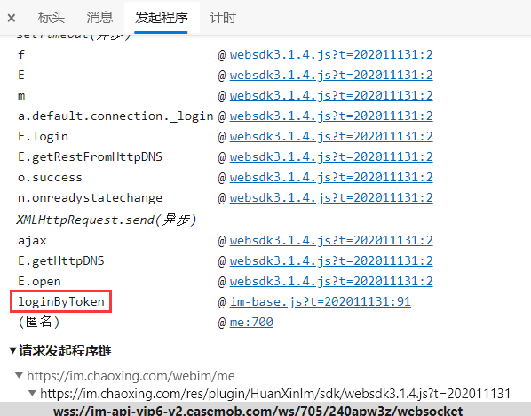
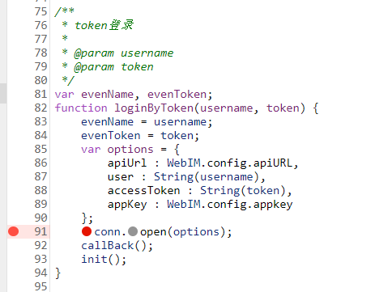
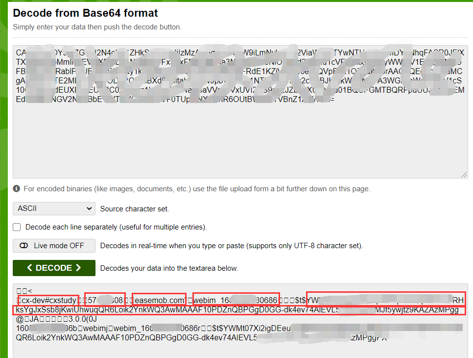

超星学习通IM协议分析
超星学习通IM协议分析。
本文仅供学习交流。
超星学习通的课程签到任务，会第一时间以一条消息的形式发送到课程群聊中。如果能监听课程群聊的消息，就能在第一时间得到最新的签到任务。
当前的学习通自动签到程序，都采用轮询课程任务页面的方式获得课程签到任务。轮询的缺点很明显，频率过高会被反爬虫措施拦截，频率过低很容易错过签到。而监听课程群聊消息的方式，不需要轮询，效率高，灵敏度高，甚至可以做到“秒签到”的效果。（博主的一个实现：https://github.com/cyanray/cx-auto-sign）
接下来简单分析一下超星学习通的IM协议。
从 Android 端进行分析是比较复杂的，尤其是高版本的 Android 系统，因为证书信任的问题，抓包变得非常困难。
在超星学习通的网页端找了找，很幸运找到了 Web 版本的IM客户端：https://im.chaoxing.com/webim/me
有网页版本的话，工作就轻松多了。按下 F12，打开开发人员工具慢慢分析。
注意到这个页面有个 WebSocket 连接。(如图)在有新消息到达时，这个 WebSocket 连接都会有相应的数据包到达。而且新消息的内容越长，到达的数据包尺寸越大。
所以可以猜测超星学习通的IM协议是基于 WebSocket 协议的。


先不急分析数据包的具体含义，我先去看了看这个 Websocket 的发起程序。发现调用堆栈中最开头有个函数叫 loginByToken。这说明超星的IM协议存在登录部分，而且可以通过一种 Token 登录。
继续分析 loginByToken 函数所在的文件 im-base.js。可以发现这个文件注释齐全，代码规范，逆向分析er大喜。 可以发现里面还有一个 login 函数，参数是用户名和密码，这说明这个IM协议可能还可以直接用账号密码登录。（虽然没什么用）

loginByToken 函数的定义如下：
1 | /** |
从这个函数可以了解到要建立这个 WebSocket 连接需要的一些参数。
打个断点，刷新页面，就能看到这些参数的具体内容。搜索之后发现，这些参数基本都能在网页源代码里找到。

继续分析，实际发起 WebScoket 连接的文件是 websdk3.1.4.js。从这个文件的 url (https://im.chaoxing.com/res/plugin/HuanXinIm/sdk/websdk3.1.4.js) 发现关键词 HuanXinIm。百度之后发现是环信IM。原来超星学习通的IM服务是环信IM提供的。
然而环信IM没有提供 dotnet sdk。因此只能继续逆向分析出协议，自己实现了。
返回去分析 WebSocket 的数据包，有个别包以“==”结尾，猜测是 base64 编码。找个解码工具解码看看内容。

几乎是明文的。
图中圈起来的内容分别是：AppKey，uid，固定字符串，环信IM的ID，登录用的Token。
篇幅有限，更多的细节就不再分析了。
超星学习通IM协议分析